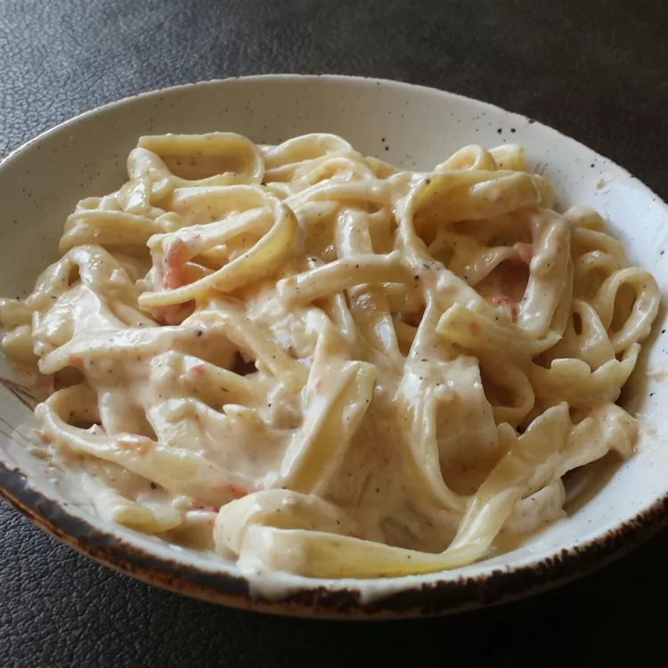

Cream Pasta Recipe

Description
If you're looking for an entrée full of piquant flavor, try this quick and easy pasta dish topped with a spicy cream sauce
made with habanero peppers, garlic, and shallots. You can add sautéed chicken or shrimp if desired.
Ingredients
- 8 Ounce package Pasta
- 1 teaspoon butter
- 1 teaspoon olive oil
- 1 medium shallot, chopped
- 2 cloves garlic, diced
- 1 dried habanero pepper, chopped
- 2 cups heavy cream
- & more..
Steps:
- Bring a large pot of lightly salted water to a boil. Add pasta and cook until tender yet firm to the bite, 8 to 10 minutes.
- While the pasta is cooking, melt butter with olive oil in a skillet over medium heat.
Add shallot, garlic, and habanero pepper; cook and stir until lightly browned and fragrant,
about 2 minutes. Remove from the heat.
- Bring cream to a simmer in a saucepan over medium heat. Stir in shallot mixture and tomato,
then mix in flour and black pepper. Simmer until thickened, 5 to 8 minutes. Stir
in Parmesan cheese. Remove from the heat and let sit until pasta is finished.
- Drain pasta. Serve pasta on plates and ladle sauce over top.
Return home